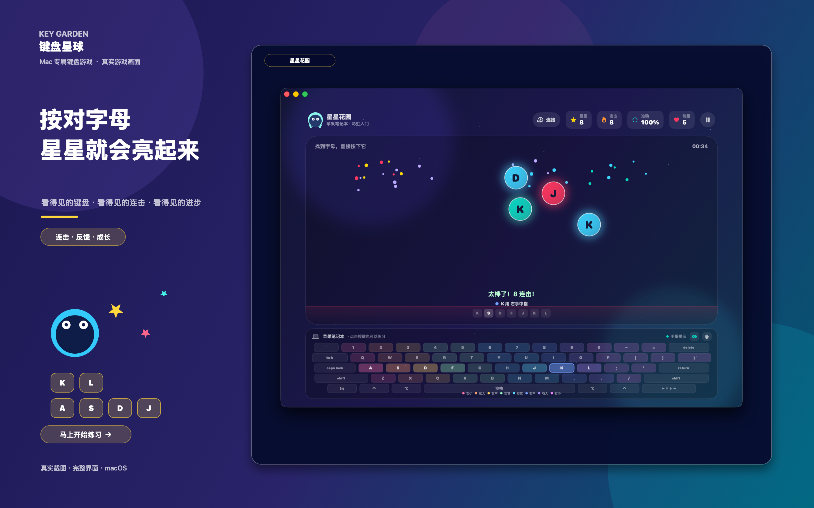
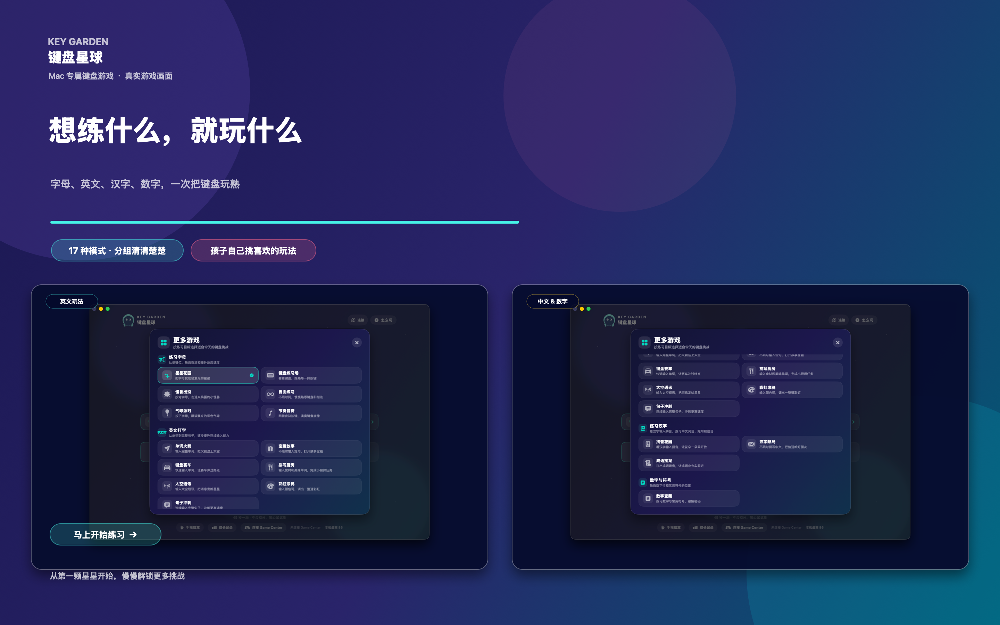

17 种练习场景
从找按键、英文打字到中文拼音，让练习循序渐进。
指法引导
屏幕键盘高亮、F/J 定位和八指分色，帮助建立正确习惯。
本地成长记录
保存练习次数、正确按键、练习时长与最高成绩。
REAL APP SCREENSHOTS
真实界面展示
全部来自当前送审版本，完整保留 16:10 画面。


从找按键、英文打字到中文拼音，让练习循序渐进。
屏幕键盘高亮、F/J 定位和八指分色，帮助建立正确习惯。
保存练习次数、正确按键、练习时长与最高成绩。
全部来自当前送审版本，完整保留 16:10 画面。

